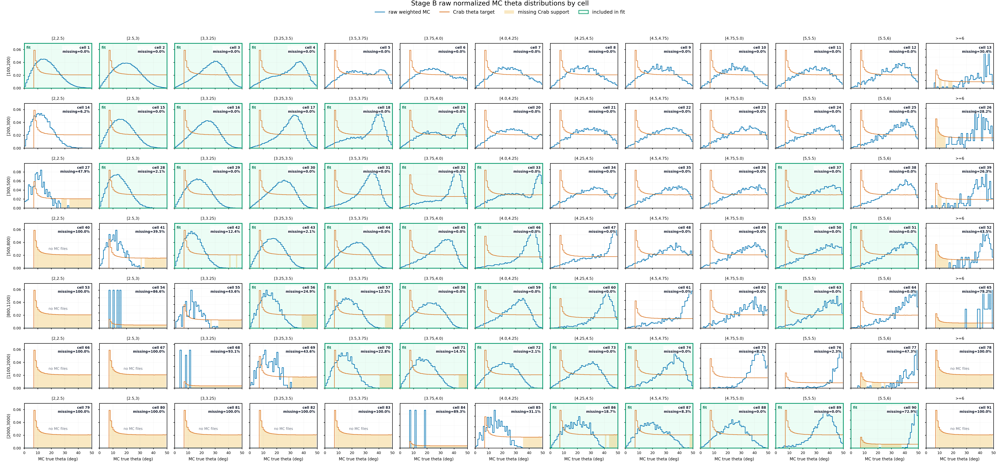
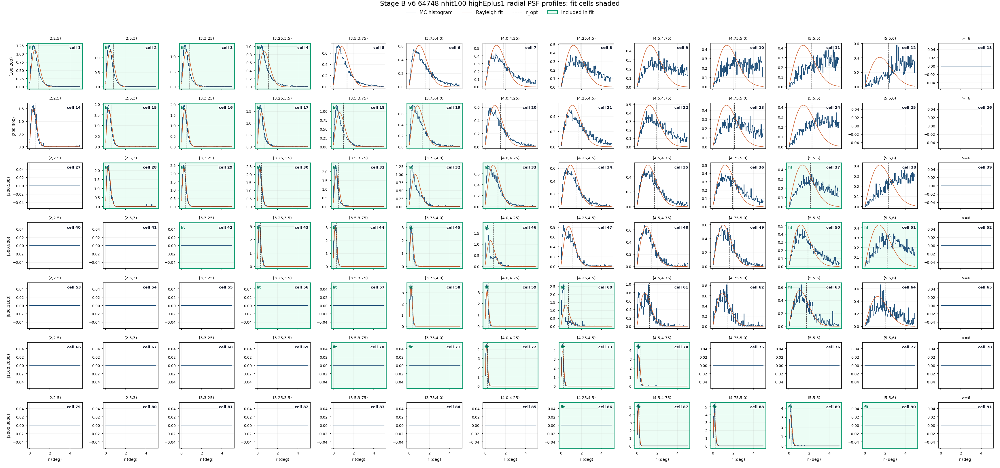
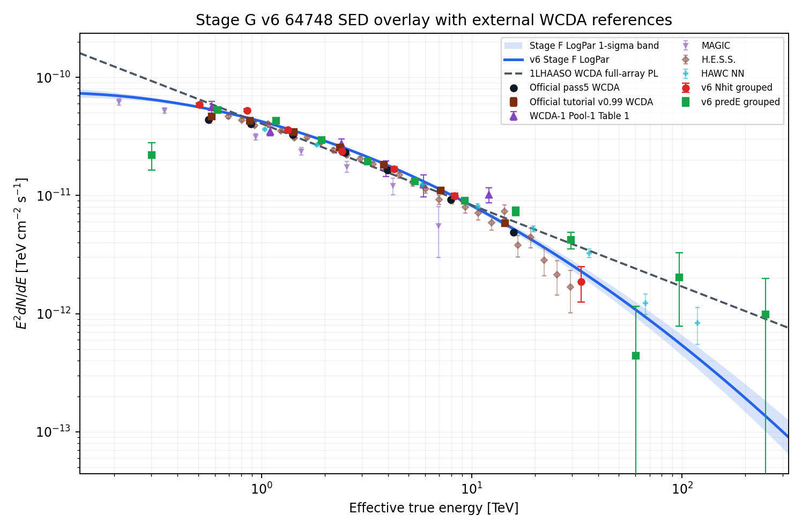

Crab SED v6 64748 nhit100 highEplus1 Stage A-G
New v6 chain for v6_64748_nhit100_highEplus1_split56. The first Nhit bin is [100,200), predE split56 keeps [5,5.5) and [5.5,6), and >=6 is retained only as a diagnostic tail outside Stage F/G.
Executive Check
| Gate | Status | Evidence |
|---|---|---|
| run id | pass | v6_64748_nhit100_highEplus1_split56 |
| Nhit binning | pass | [100,200) |
| tail policy | pass | 7 >=6 tail cells, 0 included |
| selector | pass | 37 original ridge cells, 2 highEplus1 included, 3 rejected probes |
| Stage C files | pass | 3,969 processed, missing time 0, entry mismatch 0 |
| Stage E signal | pass | formal sigma 65.437 |
| Stage F fit | pass | preferred logpar |
| Stage G points | pass | 7 Nhit points, 12 predE points |
| metadata pollution | passed | 0 legacy main-input path/token offenders |
Slurm Jobs
All heavy recomputation stages are intended to run through the Slurm dependency chain. This table is populated from PIPELINE_JOB_IDS when available.
Inputs And Outputs
The main chain uses the 64748 observation eval root and its recovered-time tree. The response, PSF, aperture response, fit, and SED products are all under the new run namespace.
| Field | Value |
|---|---|
| Run id | v6_64748_nhit100_highEplus1_split56 |
| Observation root | /mnt/mydisk/WCDA_observation_eval_64748 |
| Recovered time root | /mnt/mydisk/WCDA_observation_eval_64748/recovered_time |
| MC candidate cache | /mnt/mydisk/WCDA_simulation_binned_response_v6_64748_nhit100_highEplus1_split56_candidate |
| Model run dir | /mnt/mydisk/server/projects/energy_reconstruction/runs/theta_recoxy_position_embed_noemax_no_core_cut_64748 |
| Fit selector | ../config/cell_selector_v6_64748_nhit100_highEplus1_split56_fit.csv |
| Stage C input entries | 254,436,994 |
| After configured-cell selection | 113,938,262 |
| Stage | Primary output |
|---|---|
| Prepare/cache | /mnt/mydisk/WCDA_simulation_binned_response_v6_64748_nhit100_highEplus1_split56_candidate |
| Stage A response | apply/output/stage_a_v6_64748_nhit100_highEplus1_split56 |
| Stage B PSF | apply/output/stage_b_v6_64748_nhit100_highEplus1_split56 |
| Stage A aperture response | apply/output/stage_a_v6_64748_nhit100_highEplus1_split56_aperture_conditioned |
| Stage C observation | apply/output/stage_c_v6_64748_nhit100_highEplus1_split56 |
| Stage D background | apply/output/stage_d_v6_64748_nhit100_highEplus1_split56_annnorm |
| Stage E signal | apply/output/stage_e_v6_64748_nhit100_highEplus1_split56_containment1_annnorm |
| Stage F fit | apply/output/stage_f_v6_64748_nhit100_highEplus1_split56 |
| Stage G SED | apply/output/stage_g_v6_64748_nhit100_highEplus1_split56 |
Selector Rule
The final selector preserves original MC-ridge fit cells, then considers exactly one adjacent higher predE bin per Nhit band. New high-side cells enter Stage F/G only when both MC statistics and Stage B PSF quality gates pass. No lower-energy expansion is applied.
| Nhit | Status | Candidate | MC count | PSF gate | Reasons |
|---|---|---|---|---|---|
[100,200) | included_highEplus1 | [3.25,3.5) cell 4 | 54,366 | 1 | pass |
[200,300) | included_highEplus1 | [3.75,4.0) cell 19 | 17,909 | 1 | pass |
[300,500) | rejected_highEplus1_probe | [5.5,6) cell 38 | 13,883 | 0 | containment_warning |
[500,800) | diagnostic_tail_only | >=6 cell 52 | 158 | 0 | tail_ge6_excluded_from_main_fit |
[800,1100) | rejected_highEplus1_probe | [5.5,6) cell 64 | 3,211 | 0 | containment_warning |
[1100,2000) | rejected_highEplus1_probe | [4.75,5.0) cell 75 | 2,279 | 0 | valid_events_le_0;effective_events_lt_200;core_fit_effective_events_lt_200;theta_missing_mass_gt_0.1;containment_warning;angle_check_warning |
[2000,3000) | diagnostic_tail_only | >=6 cell 91 | 0 | 0 | tail_ge6_excluded_from_main_fit |
Included highEplus1 cells
| Cell | Nhit | predE | MC count | PSF reason |
|---|---|---|---|---|
| 4 | [100,200) | [3.25,3.5) | 54,366 | pass |
| 19 | [200,300) | [3.75,4.0) | 17,909 | pass |
Rejected highEplus1 probes
| Cell | Nhit | predE | MC count | Reason |
|---|---|---|---|---|
| 38 | [300,500) | [5.5,6) | 13,883 | containment_warning |
| 64 | [800,1100) | [5.5,6) | 3,211 | containment_warning |
| 75 | [1100,2000) | [4.75,5.0) | 2,279 | valid_events_le_0;effective_events_lt_200;core_fit_effective_events_lt_200;theta_missing_mass_gt_0.1;containment_warning;angle_check_warning |
Stage C Time Audit
Stage C used /mnt/mydisk/WCDA_observation_eval_64748/recovered_time. Missing-time and entry-mismatch rows are listed below when present.
| Metric | Value |
|---|---|
| Processed files | 3,969 |
| Missing time files | 0 |
| Entry mismatch files | 0 |
| Selected rows | 113,938,262 |
| Matched MJD min | 59579.667 |
| Matched MJD max | 59760.652 |
Stage A-B-D-E Diagnostics
Stage A nominal response is primary_thrown_response; Stage F/G use primary_thrown_aperture_conditioned_response. Stage B wrote 91 PSF rows. The theta grid shows each cell's raw mc_weight-normalized distribution before Crab reweighting; orange shading marks Crab-positive theta bins without MC support, and each panel reports the corresponding missing probability mass. Pale green panels mark the 39 cells used by Stage F/G.








Stage F Fit
Stage F uses the new highEplus1 selector and the aperture-conditioned 64748 response. The preferred model recorded by Stage F is logpar.
| Fit | Valid | chi2/ndof | p | phi0 | gamma/alpha | beta |
|---|---|---|---|---|---|---|
| PL conservative | True | 448.9/37 | 3.408e-72 | n/a | n/a | n/a |
| LogPar conservative | True | 345.5/36 | 3.208e-52 | n/a | n/a | n/a |
| PL sqrt-N | True | 801.7/37 | 2.064e-144 | n/a | n/a | n/a |
| LogPar sqrt-N | True | 594.1/36 | 3.170e-102 | n/a | n/a | n/a |
Stage G SED
Stage G freezes the preferred Stage F spectrum with phi0=2.4612e-12, alpha=2.702, beta=0.102 at 3 TeV. Quality status: passed.
| Nhit group | Cells | E_eff TeV | E2 dN/dE | Err | chi2/ndof |
|---|---|---|---|---|---|
[100,200) | 1;2;3;4 | 0.5088 | 5.8507e-11 | 2.289e-12 | 102.7/3 |
[200,300) | 15;16;17;18;19 | 0.8548 | 5.2541e-11 | 1.235e-12 | 42.17/4 |
[300,500) | 28;29;30;31;32;33;37 | 1.339 | 3.5764e-11 | 6.893e-13 | 56.72/6 |
[500,800) | 42;43;44;45;46;50;51 | 2.411 | 2.3649e-11 | 5.518e-13 | 17.28/6 |
[800,1100) | 56;57;58;59;60;63 | 4.272 | 1.6753e-11 | 7.519e-13 | 26.09/5 |
[1100,2000) | 70;71;72;73;74 | 8.268 | 9.9063e-12 | 5.136e-13 | 44.02/4 |
[2000,3000) | 86;87;88;89;90 | 33.18 | 1.8702e-12 | 6.158e-13 | 7.264/4 |
| PredE group | Cells | E_eff TeV | E2 dN/dE | Err | chi2/ndof |
|---|---|---|---|---|---|
[2,2.5) | 1 | 0.3009 | 2.2097e-11 | 5.750e-12 | 0/0 |
[2.5,3) | 2;15;28 | 0.6178 | 5.2652e-11 | 1.176e-12 | 83.3/2 |
[3,3.25) | 3;16;29;42 | 1.177 | 4.2764e-11 | 9.415e-13 | 37.03/3 |
[3.25,3.5) | 4;17;30;43;56 | 1.931 | 2.9485e-11 | 6.901e-13 | 28.03/4 |
[3.5,3.75) | 18;31;44;57;70 | 3.199 | 1.9305e-11 | 6.341e-13 | 14.62/4 |
[3.75,4.0) | 19;32;45;58;71 | 5.384 | 1.3199e-11 | 5.605e-13 | 25.12/4 |
[4.0,4.25) | 33;46;59;72 | 9.277 | 9.0442e-12 | 4.835e-13 | 10.15/3 |
[4.25,4.5) | 60;73;86 | 16.23 | 7.3493e-12 | 6.192e-13 | 13.22/2 |
[4.5,4.75) | 74;87 | 29.6 | 4.2143e-12 | 6.726e-13 | 16.22/1 |
[4.75,5.0) | 88 | 60.26 | 4.4226e-13 | 7.103e-13 | 5.7412e-33/0 |
[5,5.5) | 37;50;63;89 | 97.06 | 2.0354e-12 | 1.252e-12 | 7.964/3 |
[5.5,6) | 51;90 | 249.4 | 9.8875e-13 | 1.000e-12 | 4.557/1 |
Metadata Audit
Main-input metadata files were scanned for legacy cache/model path tokens. Status: passed.